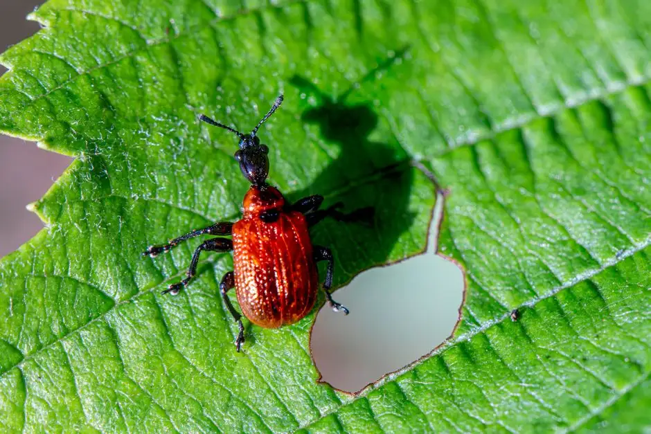
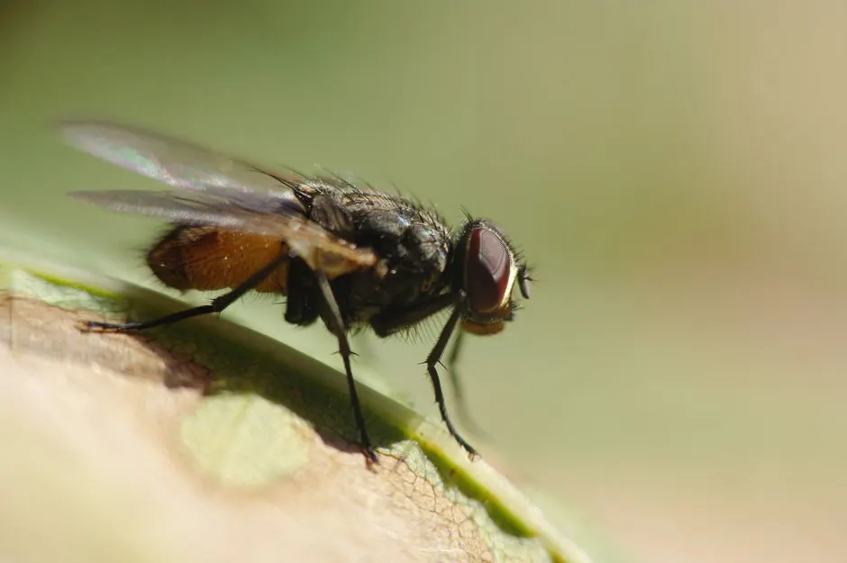
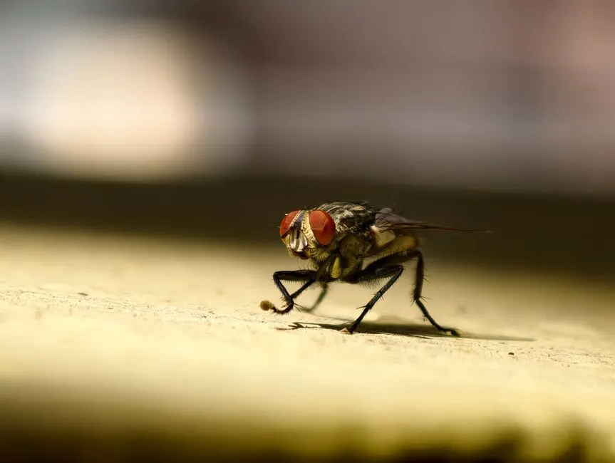

Sealed entry points, trapped rodents, and a clean attic in one visit
Rodent Control Corona CA That Clears Rats and Mice Fast
If you hear scratching in the attic at 2 a.m. or find droppings behind the pantry, you need rodent control Corona CA that actually finds the entry point instead of just setting a few traps. We handle rats and mice in homes from Downtown Corona to South Corona, seal the gaps they use, and remove the mess they leave behind. Call 951-257-7625 and we can usually be at your door the same day.
Live phone supportUpfront optionsBacked workmanship
What's included
What Our Rodent Control Service Includes
Every rodent job covers inspection, trapping, baiting, exclusion, and sanitation. Add-ons like insulation replacement or crawlspace sealing are quoted separately after we see the space.
Full Property Inspection
We inspect the exterior, attic, garage, and crawlspace for entry points, droppings, and gnaw damage. You get photos and a written summary of what we found and where the rodents are getting in.
Trapping and Baiting
We place rodent traps, glue boards, and tamper-resistant bait stations in the right locations for the species we find. Bait is professional-grade rodenticide, not retail product, and stays locked and out of reach.
Exclusion and Sealing
We close entry points with exclusion mesh, hardware cloth, sealants, and vent covers. This is the step that stops re-infestation. Most Corona homes need 6 to 14 points sealed depending on age and construction.
Attic Sanitation
We remove droppings, nesting material, and contaminated debris, then treat the space with an indoor-approved disinfectant. If insulation is heavily soiled, we quote replacement separately so you can decide.
14-Day Follow-Up
We return at the two-week mark to pull traps, check bait stations, and confirm activity has stopped. If rodents are still active, we re-treat at no additional cost inside the warranty window.
Service overview
What Rodent Control Corona CA Really Involves
Rodent control Corona CA is a licensed inspection and exclusion service that finds how rats and mice are getting into your home, removes the active population, and seals the structure so they cannot return. It is not a box of snap traps from the hardware store. We start with a full walk of the exterior and attic, check the garage, roofline, and foundation vents, then build a plan around what we actually find. Roof rats and house mice behave differently, so the bait stations, traps, and exclusion mesh we use depend on the species and the layout of your home.
Corona sits in Riverside County, where hot summers push rodents toward cool attics and garages, and the fall and winter months send them inside looking for warmth and food. Homes near the foothills and older neighborhoods with mature citrus trees see heavy roof rat traffic. If you have already tried store-bought bait and the scratching came back within two weeks, that is normal. The colony was never removed and the entry point was never closed. That is the gap rodent removal Corona homeowners call us about most often.

How we workWe verify the cause, compare realistic options, and confirm the repair before we leave.
The service timeline
Our Rodent Control Process, Step by Step
The process flexes to the condition, but these checkpoints keep decisions clear.
Full Inspection
A licensed technician walks the exterior, attic, garage, and crawlspace with a UV flashlight and inspection mirror. We look for droppings, rub marks, gnaw damage, and entry gaps. This usually takes 30 to 45 minutes and tells us the species, the population size, and the entry points.
Written Findings
We show you what we found with photos and a simple diagram of the entry points. You get a clear scope and price before any work starts. If the problem is minor, we will tell you that instead of selling a full exclusion job you do not need.
Trapping and Baiting
We set rodent traps, glue boards, and locked bait stations in the right places, not just along a wall. Bait stations stay tamper-resistant and out of reach of kids and pets. Expect the first 3 to 7 days to be the heaviest catch period.
Exclusion Work
Once activity drops, we seal the entry points with exclusion mesh, sealants, and vent covers. This is the step that keeps rodents from walking right back in. Most homes take 2 to 4 hours of exclusion work depending on how many gaps we find.
Sanitation and Follow-Up
We remove droppings and nesting material, treat the area with disinfectant, and schedule a 14-day follow-up. At that visit we pull traps, check stations, and confirm the home is clear. You get a written summary of what was done.
Tools & methods
Tools and Methods We Use
Purpose-built equipment, used by trained technicians, so the job is done accurately the first time.
Tamper-resistant bait stations
Locked stations hold professional rodenticide and keep bait away from kids, pets, and wildlife. We place them along rodent runways and check them at every follow-up visit.
Rodent traps and glue boards
Snap traps and glue boards catch rodents in attics, garages, and tight voids where bait alone will not work. We set them in the travel paths we find during inspection, not randomly along walls.
UV flashlights and inspection mirrors
UV light makes rodent urine and droppings visible, and mirrors let us see behind appliances, into wall voids, and along rooflines without tearing anything apart.
Exclusion mesh and sealants
Hardware cloth, exclusion mesh, and exterior-grade sealants close the gaps rodents use. This is the step that turns a temporary fix into a lasting result.
Power sprayers and insecticide
We use power sprayers to apply insecticide and disinfectant in attics, garages, and crawlspaces after rodent removal, which also knocks down the insects rodents attract.
Moisture meters
Moisture meters help us find leaks and damp spots that attract rodents and insects. Fixing the moisture source is often part of keeping the problem from coming back.
Use cases
When to Call for Rodent Control
These examples show how the service framework adapts rather than forcing every call through one repair.

Garage Mouse Problem Solved in South Corona
Mice were getting into a South Corona garage through a gap under the door and an open vent. Droppings showed up on shelves and in stored boxes, and the homeowner found chewed packaging. → We set traps and glue boards, sealed the door gap and vent with hardware cloth, and treated the garage with disinfectant. No droppings were found at the two-week follow-up.
Pantry and Kitchen Cleared in Corona
A family found droppings behind the stove and in two cabinets. The entry point was a utility penetration behind the kitchen wall. They had thrown out food twice already. → We located the penetration, sealed it, set traps along the travel path, and disinfected the cabinets. Droppings stopped within five days, and the follow-up confirmed the kitchen was clear.
Problems we solve
Rodent Problems We Solve in Corona
Rodents cause damage that gets worse the longer you wait. Here are the problems we see most and how we fix them.
Scratching and scurrying in the attic at night
We inspect the roofline and attic, set traps and bait stations along the travel paths, then seal the roof and vent entry points with exclusion mesh. Most attic jobs show a sharp drop in noise within 3 to 5 days.
Droppings in the pantry and kitchen cabinets
We locate the entry gap, usually near the garage or under a sink, set traps and glue boards, and seal the opening. We also treat the cabinet area with disinfectant and advise on what food to discard.
Gnaw marks on wiring and pipes in the garage
We inspect the garage and utility areas with a UV flashlight, set bait stations, and seal the gaps rodents use. We document the gnaw damage we find so you can have an electrician or plumber check anything serious.
Rodents returning after a store-bought bait attempt
We remove the active population with professional rodenticide and traps, then close the entry points. That combination is why our re-infestation callbacks stay low compared to bait-only treatments.
Pricing process
What Rodent Control Costs in Corona
$180 - $850 depending on scope
Number of entry points
A home with two roofline gaps costs less to seal than one with twelve. Older Corona homes with open eaves usually need more exclusion work, which is the biggest driver of price.
Attic size and access
Larger attics take longer to inspect, trap, and sanitize. Difficult access, low clearance, or multiple attic spaces add labor time and raise the total.
Level of sanitation
Light droppings need a basic disinfectant treatment. Heavy contamination with soiled insulation requires removal and replacement, which is quoted separately.
Customer reviews
What Corona Customers Say
★★★★★
“We heard scratching above the bedroom for almost a month. The technician found three roof rat entry points near the roofline that two other companies missed. They trapped for a week, sealed everything, and cleaned the attic. The scratching stopped by day four. Worth every dollar.”
★★★★★
“Mice got into our garage and pantry. They set bait stations and traps, then sealed the gap under the garage door and a vent we did not know was open. Follow-up at two weeks confirmed nothing was left. No more droppings since.”
★★★★★
“I manage four rentals and needed a reliable rodent company. They handled all four units in one week, documented every entry point with photos, and gave me written reports for each property. My tenants stopped calling about noises. That alone was worth it.”
How much does rodent control cost in Corona CA?
Most residential rodent jobs in Corona run $180 to $450 for trapping and baiting, and $400 to $850 when exclusion work and attic sanitation are included. Price depends on the number of entry points, attic size, and whether insulation needs replacing. We give you the exact number after the inspection, before any work starts.
How do I know if I have mice in my Corona home?
The three clearest signs are droppings along baseboards and in the pantry, scratching or scurrying sounds at night, and gnaw marks on food packaging or wiring. Mice also leave a musky odor in closed cabinets. If you find any of these, call 951-257-7625 and we will inspect the same day.
What is the best rodent exterminator in Corona?
The best rodent exterminator in Corona is the one that seals your home, not just sets traps. Look for a California Structural Pest Control Board license, EPA-certified rodenticide use, and a written warranty. We meet all three and back our exclusion work with a 90-day warranty.
How long does rodent treatment take in Corona California?
The first visit takes 1 to 2 hours for inspection, trapping, and baiting. Exclusion work usually adds 2 to 4 hours on a second visit. Most homes see activity drop within 3 to 7 days, and we confirm the home is clear at the 14-day follow-up.
Related services
Related Services

General Pest Control
Rodents often come in through the same gaps ants and spiders use. Our general pest control service covers perimeter treatment and entry sealing, which pairs well with rodent exclusion work for Corona homeowners who want one plan for the whole house.
Ant Control
Ant trails in the kitchen and rodent droppings in the pantry often show up together because both follow the same moisture and food sources. We treat ant infestation with bait gel and perimeter spray, then seal the shared entry points we find during the rodent inspection.
Cockroach Control
Cockroach infestation and rodent activity both thrive in warm, cluttered garages and crawlspaces. Our cockroach service uses bait gel and insecticide, and we often run it alongside rodent work in Corona homes where both problems are active at once.Ready when you are
Get Rodent Control Corona CA Started Today
Every job starts with a licensed inspection and a written price. Call 951-257-7625 and we will get a technician to your property, usually the same day. Licensed, insured, and warrantied work on every rodent job in Corona.

Talk with the local team
Contact Our Corona Office
Call 951-257-7625 and a real person will answer, day or night. We book same-day inspections when you call before 2 p.m., and we run 24/7 emergency service for urgent problems. Tell us what you are seeing and we will tell you what it takes to fix it.
Live team · Open 24/7
Need pest control? Just call.
No forms and no waiting. Talk to a licensed Corona technician and get your free inspection booked in minutes.
951-257-7625 Tap to call now- Same-day appointments when you call before 2 p.m.
- Free inspection and written estimate
- Emergency response in under 90 minutes
- Licensed, insured and warrantied work